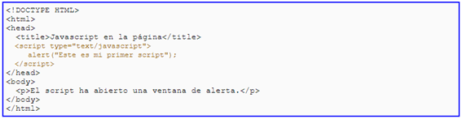

Sintaxis de JavaScript
El lenguaje JavaScript se coloca dentro de los documentos HTML, pero debemos indicarle al navegador web que utilizaremos código java script, por lo que pondremos nuestro código dentro de las etiquetas script language=» JavaScript»> y script
Como incluir JavaScript en una Página Web
Existen tres maneras de insertar el código JavaScript en una página web.
1. Propio en el Documento
Para incluir código Javascript en el propio documento lo haremos mediante la etiqueta
Debemos poner siempre el atributo type="text/javascript" para indicar que lo que vamos a escribir dentro de la etiqueta es código javascript.
Al código encerrado dentro de la etiqueta se le llama script. Un script es un fragmento de código que está dentro de una etiqueta, o de un archivo, y que se ejecuta todo seguido. No importa si tiene una sola sentencia o miles de ellas siempre que forme un bloque que se ejecute todo seguido
2. Código en Archivo Aparte
Podemos colocar el código javascript en un archivo aparte. El sistema es similar al empleado para colocar el código CSS en archivo aparte. es decir, en la cabecera (o también en alguna otra parte del documento) escribimos una etiqueta de enlace al archivo. Luego creamos ese archivo que contendrá el código javascript.
Para ello en primer lugar debemos escribir la etiqueta, la cual será la siguiente:
La etiqueta llevará el atributo y valor: type="text/javascript" y el atributo src= "...", cuyo valor será la ruta del archivo externo donde se encuentre el código javascript.
El archivo externo es también un archivo creado con el editor de textos, y contiene el código javascript. debe llevar la extensión .js. El archivo debe contener únicamente el código javascript, sin ningún tipo de código HTML o de otra clase.
3. Código en los Elementos HTML
También podemos poner el código en los elementos HTML a los que va a afectar. Aunque no suele ser lo más habitual, ya que alarga el código HTML y se mezcla con el de javascript.